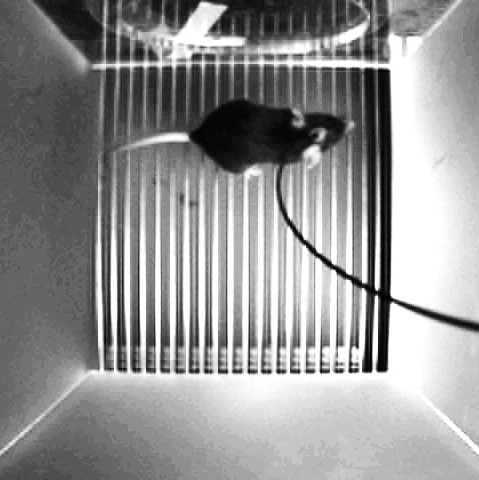
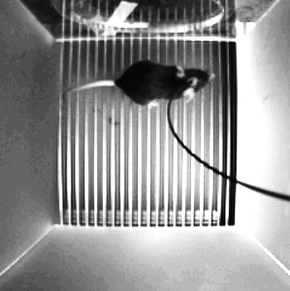

About
I earned my MSc degree from the University of Calgary, specializing in the development of electronics for biomedical applications. My MSc research involved analog circuit design, embedded system design, and signal processing. Prior to this, I did my Electrical Engineering BSc in Sharif University of Technology specializing in electrinics. I worked at the Superconductive Electronics Research Lab (SERL) at Sharif University for approximately 2 years. At SERL, I completed my final BSc project which involved designing analog circuits, programming arduino boards, and developing a GUI. My technical skills include analog circuit design, PCB design, embedded C programming, and MATLAB, coupled with hands-on experience in electronics and optics labs.
In my free time, I enjoy doing arts and crafts as a hobby. Drawing and painting are my go-to activities, and I sometimes share my creations on social media. I also play a bit of violin and love trying new musical instruments every once in a while.
Projects
Electrochemical Spectroscopy Device for Cortisol Detection
Electrochemical Impedance Spectroscopy (EIS) can be used to obtain information about the interface between an electrode and an electrolyte. In this technique, the impedance of an electrochemical cell is measured at a range of frequencies.
With the appropriate sensor, EIS can be used to determine the concentration of various analytes. The analyte I focused on in this project was cortisol. Cortisol is a biomarker of stress. Long-term monitoring of cortisol concentration in sweat can help us understand its role in various biological phenomena such as disease progression.
I designed an EIS device optimized for immunosensing cortisol in sweat. The device which is pictured above, performs EIS on a sample. Then, the impedance data is processed and the concentration of cortisol in the sample is determined. The device has several modes of operation, automatic gain control, and a compact form factor. Additionally, it is fast, battery-powered, and wireless.
The design and board bring-up process involved system design, analog circuit design, simulations, programming microcontrollers in C, data processing in MATLAB, as well as soldering and rework. Testing, troubleshooting, charactarization, and experiments were also involved.
SiPM-based Low-light in vivo Fiber Photometry
 
Fiber photometry is an optical technique for measuring neural activity in freely moving animals. It is an important tool in basic research, and it's used to study animal behavior and its neural activity correlates. These studies provide insight into brain processes such as learning and neural plasticity.

Fiber photometry is an optical technique for measuring neural activity in freely moving animals. It is an important tool in basic research, and it's used to study animal behavior and its neural activity correlates. These studies provide insight into brain processes such as learning and neural plasticity.
Simply put, in fiber photometry experiments, animals are genetically engineered to express a fluorescent protein in a specific population of their cells, for example, in neurons of a certain brain region. A fiber photometry system measures fluorescence of that brain region to assess neural activity. This is done by sending blue light into the brain, collecting back the resulting green fluorescent light, and then sensing and measuring the intensity of the green light.
Conventional fiber photometry systems are either bulky, expensive, and power-hungry, or they require high optical power which can change cells' properties. This is mostly because of the type of photodetectors used in fiber photometry. We addressed these problems by using a Silicon Photomultiplier Tube (SiPM) as the photodetector in fiber photometry. Up until now, SiPMs' usage was mostly limited to physics research. For example, they are used in CERN's collision projects.
I designed electronics for fiber photometry and SiPM read-out. There are two notable factors in my design. One is stabilizing SiPM gain by relying on an element often used in conventional fiber photometry systems. The second one is interfacing an impedance converter chip with an optical system to simplify the electronics for fiber photometry.
The design and bring-up process involved system design, analog circuit design, simulations, programming microcontrollers in C, data processing in MATLAB, as well as soldering and rework, and setting up optical systems. Testing, troubleshooting, characterization, and in-vivo experiments on mice were also involved. In the pictures above, you can see a photo of the setup, a mouse during an experiment, and a fluorescent solution being excited by my system. I presented this project at the IEEE BioCAS 2023 conference.
Portable Neurostimulator for Rats
For my final BSc project, I made a highly-configurable neurostimulator for electrical stimulation of rats' spinal cords. This neurostimulator is an Arduino-based two-channel biphasic pulse-generator with a user-friendly graphical user interface. In rats with spinal cord injury, this device can be used to stimulate the spine and cause movement in rats' hindlimbs. Along with a brain-computer interface, it can potentially restore gait in animals with spinal cord injury. This device has been used in a collabrative research project between SERL and Royan Institude. The findings from this research, using the device I designed, have been published in two papers as of January 2024.
Tetris in C
This is my first C programming project which I did when I was a first-year undergraduate student. It's a classic Tetris game in C standard output with full functionality.